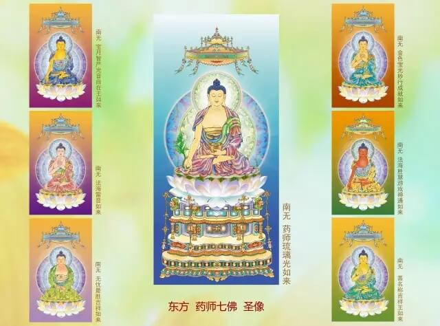

本师释迦牟尼佛出世时，
人寿百岁。
公元前543年，佛入涅盘。
自佛陀涅盘时起计算佛历。
2019年是佛历2563年。
现值减劫，每过一百年减一岁。
照此计算：
公元前513年，人寿99岁。
公元元年，人寿94岁。
公元1000年，人寿84岁。
公元2000年，人寿74岁。
2008年根据有关统计，
中国人均寿命平均72岁，
证明佛教人寿说的准确性。
公元3000年，人寿64岁。

按高僧预言：
“将来到五百年或一千年之后，
人人各在东西两半球，相距数万里，
不要用无线电话，就可以直接谈话，
如同在面前。
不用看电视，
就可以看到各种戏剧娱乐的节目。”
这就是未来人类的科技水平。
公元4000年，人寿54岁。
公元5000年，人寿44岁。
公元6000年，人寿34岁。
饥馑灾起，
人寿减至三十岁时，
人身量不满三尺，
于时，
人类的道德伦理因果观念，
丧失殆尽，福报相继享尽，
连粗劣的五谷杂粮也渐没，
稊稗充饥，为食中第一；
以发褐遮体，为衣中第一；
以铁为至宝，为庄饰第一。
相煎人皮朽骨为宴会。
偶得一粒麦谷，如获摩尼宝珠，密藏守护。
饥馑灾至，
凡七年七月七日，天不降雨，
大地寸草不生，白骨遍野。
尽阎浮提，所存不过万人，
留之以作当来人种。
饥灾过后，众生共起下品厌离心。
公元7000年，人寿24岁。
疾疫灾起，
人寿减至二十岁时，
身形由三尺减至二尺高，
原来那一念下品厌离心也丧失，
疾疫灾起，种种诸病齐发，死亡积野，
过七月零七日，其灾方熄，
此时尚无甘蔗糖盐之类，
而况参苓桂附等药物。
那时，没有国家组织，
没有文化，国土空废，城镇毁败。
只有一些小村落，遥寥散布。
疾疫灾过，
众生共起中品厌离心。
公元8000年，人寿14岁。
刀兵灾起，
人寿十岁时，
彼时女子五个月即嫁，
身高才一尺，
有的人身高只有一拃手
（张开大拇指和中指的距离）
那时，
原来那一念中品厌离心又失掉，
惟有行十恶法者为人推敬。
刀兵灾至，一切众生自相杀害。
地所生草，利如锋刃，触之即死，
过七日七夜，其患方除。
有少量软心众生，避隐于山野，
刀兵灾末，所剩人口仅一万，
隐于山野的人，
出山后，遇人相抱痛哭，
众生共起上品厌离心，
发誓断恶修善，
由是寿命渐增，福报渐大。
增劫开始，如是循环。
公元9000年，人寿增至20岁。
公元10000年，人寿增至30岁。
公元11000年，人寿增至40岁。
佛法灭尽。
《俱舍论》云：
三灾起时，由二种因：
一耽着美味，二者懒惰。
随着三小灾的次第发现，
佛教法运也相应地渐趋衰微，直至灭尽。
世尊悬记：
五十二岁《首楞严经》，
《般舟三昧》先化灭法，
十二部经寻后复灭，尽不复现，不见文字，
沙门袈裟自然变白。
–《佛说法灭尽经》
尔时，
16罗汉尽收世间一切经法，
贮于铜塔，此塔沉至金刚际。
佛法灭尽，
犹如漫漫长夜失去灯炬，
众生受苦痛煎熬。
释尊怜愍众生，
后一百年特留《无量寿经》住世，
为末法众生作最后的救度。
佛言：
吾法灭时，
譬如油灯临欲灭时，光明更盛，于是便灭。
吾法灭时，亦如灯灭。
–《佛说法灭尽经》
在回光返照之际，
众生的根机尤显猛利，
加之苦痛的逼迫，
于时便能信解受持念佛法门。
据《大集经》记载：
《无量寿经》灭后，
释尊仍然悲心不舍众生，
惟余阿弥陀佛四字，广度群生。
劫尽之时，
阿弥陀佛四字，
世间众生没有能念全者，
或能念一字，
或能念二字。
若有能念全四字者，即为天上师。
人身难得今已得，佛法难闻今已闻
此身不向今生度，更待何时度此身